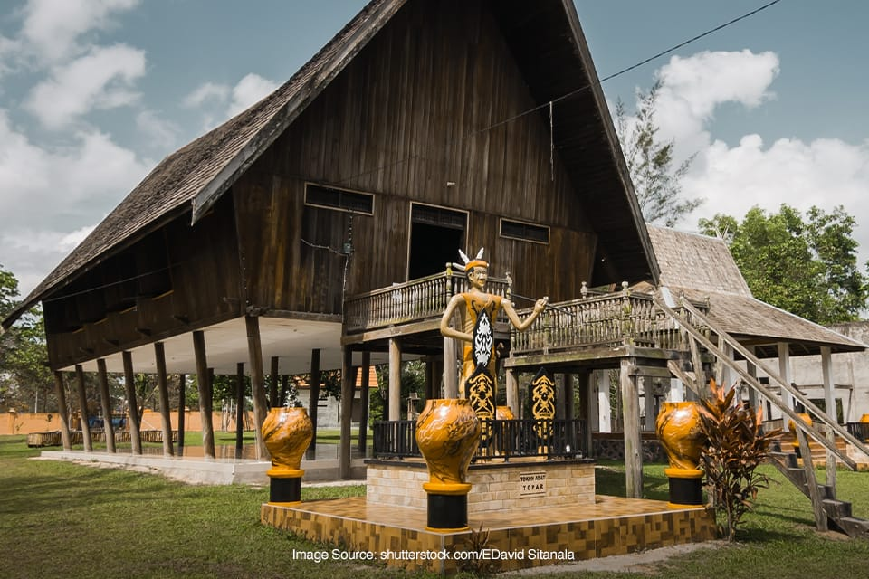
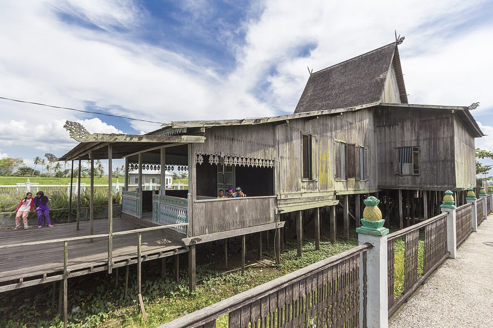

Filosofi Hidup & Sosial
Perbedaan paling mendasar terletak pada bagaimana kedua bangunan ini merepresentasikan organisasi sosial masyarakatnya.
| Aspek | Rumah Betang (Dayak) | Rumah Banjar Bubungan Tinggi (Banjar) |
|---|---|---|
| Konsep Utama | Komunalitas, Kesetaraan (Egaliter), Solidaritas. | Hierarki, Keagungan, Status Kerajaan. |
| Makna Filosofis | Satu atap untuk satu komunitas (tempat hidup kolektif). | Melambangkan hubungan antara pemimpin (Sultan) dan Langit/Tuhan. |
| Fungsi Sosial | Rumah tinggal bersama (puluhan keluarga), pusat upacara, dan pertahanan. | Dahulu: Kediaman Sultan/Raja, pusat pemerintahan, upacara kerajaan. |
Struktur Arsitektur & Simbolisme
Lihat perbedaan bentuk, dimensi, dan fungsi ruang yang mencerminkan fungsi sosialnya.
Rumah Betang (Horizontal & Komunal)
Panjang ekstremnya menggambarkan jalur kehidupan kolektif. Ruang panggungnya melambangkan keamanan dari roh jahat di tanah.
Rumah Banjar Bubungan Tinggi (Vertikal & Agungan)
Atap curam 45 derajat (Bubungan Tinggi) adalah representasi spiritualitas dan kekuasaan tertinggi Kesultanan.
Fitur Visual: Perbedaan Ruang
Betang: Dominasi ruang publik di tengah, bilik tidur di samping. Banjar: Pembagian ruang hierarkis (Pamedangan, Panampik Basar) berdasarkan status tamu.
Material & Ketahanan
Dua bangunan ini sama-sama mengandalkan ketangguhan Kayu Ulin (Kayu Besi) untuk melawan iklim tropis Kalimantan.
| Aspek | Rumah Betang | Rumah Banjar Bubungan Tinggi |
|---|---|---|
| Material Utama | Kayu Ulin, Kayu Meranti. | Kayu Ulin (tiang utama dan rangka). |
| Ketahanan | Desain panggung tinggi (tiang) untuk menghindari banjir dan kelembaban hutan. | Rangka sangat kokoh dan atap curam untuk melawan hujan deras dan angin kencang. |
Ingin merasakan langsung bagaimana rasanya berada di bawah atap sejarah? Kunjungi kedua ikon arsitektur ini.
Jelajahi Ekowisata Arsitektur Kalimantan